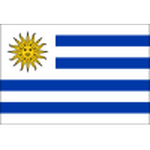
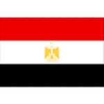

–
dni
Niedziela 19 lipca, MetLife Stadium, początek o 21:00 czasu polskiego: najlepsza obrona turnieju kontra jedyna drużyna z kompletem zwycięstw. Kursy, liczby, droga obu finalistów i nasz typ.


Hiszpania melduje się w finale z jednym straconym golem w siedmiu meczach i sześcioma czystymi kontami — w półfinale ograła Francję 2:0 po karnym Oyarzabala i golu Porro. Argentyna odpowiada siedmioma zwycięstwami i 19 golami: z Anglią przegrywała jeszcze w 84. minucie, a potem Enzo Fernández i Lautaro Martínez odwrócili wszystko w pięć minut. Mistrz Europy kontra obrońca tytułu — lepszej pary finałowej nie dało się wymyślić.
Prawdopodobieństwa implikowane, znormalizowane z kursów 1X2. Wynik w 90 minutach. Średnie kursy orientacyjne — zmieniają się na bieżąco.
| Reprezentacja | Kurs | Prawdopodobieństwo | |
|---|---|---|---|
| Hiszpania | 1,67 | 58,5% prawdop. | N1bet 1,67 |
| Argentyna | 2,35 | 41,5% prawdop. | N1bet 2,35 |
Kurs na mistrzostwo (z dogrywką i karnymi). Prawdopodobieństwo znormalizowane.
| Hiszpania | Argentyna | |
|---|---|---|
| Wygrane | 6 | 7 |
| Remisy | 1 | 0 |
| Porażki | 0 | 0 |
| Gole strzelone | 13 | 19 |
| Gole stracone | 1 | 7 |
| Czyste konta | 6 | 2 |
| Forma | WWWWW | WWWWW |
Hiszpania Capo Verde
Capo Verde Arabia Saudita
Arabia Saudita
Uruguay Austria
Austria Portogallo
Portogallo Belgio
Belgio Francia Argentyna
Francia Argentyna AlgeriaAustriaCapo Verde
AlgeriaAustriaCapo Verde
Egitto Svizzera
Svizzera Inghilterra Hiszpania
Inghilterra Hiszpania Argentyna
Argentyna

Kursy wskazują Hiszpanię: 1,67 na tytuł (około 58%), 2,27 w 90 minutach. Liczby obrony to potwierdzają, a hiszpańskie posiadanie piłki potrafi uśpić każdy finał. Tyle że Argentyna wygrywała w tym turnieju mecze każdego typu — brzydkie, zamknięte, odwrócone — i ma piłkarza, który rozstrzyga finały. Nasz typ: zamknięty mecz, poniżej trzech goli, o wszystkim zdecyduje jeden moment w drugiej połowie. Lekka przewaga Hiszpanii, ale remis w 90 minutach (3,01) daje najciekawszą wartość.
Hiszpania · kurs 2,27W niedzielę 19 lipca 2026 na MetLife Stadium w Nowym Jorku/New Jersey, początek o 21:00 czasu polskiego.
Hiszpania: kurs 1,67 na tytuł (około 58%) wobec 2,35 na Argentynę. W 90 minutach: 2,27 vs 3,49, remis 3,01.
Hiszpania wyeliminowała Portugalię, Belgię i Francję (2:0), tracąc jednego gola. Argentyna wygrała wszystkie siedem meczów, ostatnio odwracając półfinał z Anglią na 2:1.
Argentynę ciągnie Messi: 8 goli i 4 asysty; najlepszy w Hiszpanii jest Oyarzabal — 5 goli, w tym karny z półfinału.